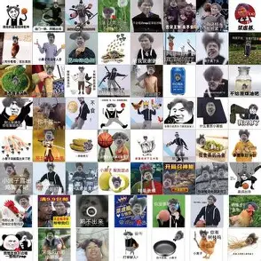
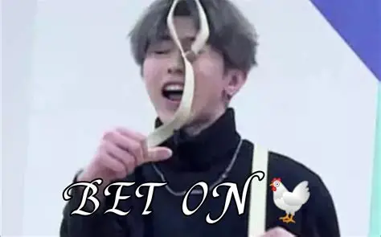

《小黑子：从玩梗到“只因之王”》
第一章：一睁眼全是“只因”
图：只因王国的鸡，全员穿背带裤，自带唱跳buff
第二章：和鸡王斗梗，我赢麻了
要在只因王国立足，必须通过“梗王试炼”，对手就是王国的鸡王――一只会拍篮球、唱rap的“全能鸡”。第一关：rap对决！鸡王唱《只因你太美》原版，我直接掏出压箱底的“变速鬼畜版”，唱到“迎面走来的你让我如此蠢蠢欲动”时，鸡王当场停嘴，一脸震惊； 第二关：篮球舞比拼！鸡王拍着小篮球跳经典动作，我直接放大招，连“比心”“甩臂”的细节都复刻到位，围观的鸡群当场喊“小黑子yyds”；第三关：斗梗问答！鸡王问“小黑子的暗号是什么”，我脱口而出“鸡你太美”，鸡王彻底服了：“你才是真正的梗王！”
图：鸡王拍篮球的名场面，和我斗舞时直接被秒杀
第三章：全王国都是我的“玩梗搭子”
成为梗王后，我在只因王国建了个“小黑子玩梗基地”，每天和鸡群一起整活：早上练篮球舞，中午唱只因rap，下午DIY小黑子表情包――用王国的“梗之画笔”，把鸡群拍成各种搞笑造型，比如“鸡你太美歪头杀”“背带裤鸡比心”，每一张都火遍王国。 后来，我还教会了鸡群玩“小黑子暗号游戏”：只要说“鸡你太美”，全场就会一起接“oh~”，连路过的小母鸡都会停下脚步参与。有一天，我发现基地门口来了一群新面孔――都是和我一样，因为玩梗穿越过来的小黑子，我们当场组成“玩梗天团”，在只因王国开启了无限整活模式！
图：我和鸡群DIY的小黑子表情包，每一张都能直接用
第四章：解锁“只因新地图”
最近，鸡王告诉我，只因王国还有一个“隐藏地图”――“篮球圣地”，那里有一个巨大的篮球雕塑，据说只要能完整跳完一整套篮球舞，就能解锁“终极梗王”称号。我和玩梗天团立刻出发，一路上遇到各种“梗之考验”：比如要唱对《只因你太美》的全部歌词，要模仿对所有篮球舞动作，还要说出10个以上的小黑子暗号。 历经千辛万苦，我们终于到达篮球圣地，当我带着鸡群和其他小黑子一起跳完篮球舞时，天空降下金光，解锁了新皮肤――“背带裤小黑子”！现在，我们的冒险还在继续，下一步，我们要把只因王国的玩梗文化，传到更多次元，让所有小黑子都能找到“组织”！
图：篮球圣地的雕塑前，我和玩梗天团跳篮球舞解锁新皮肤